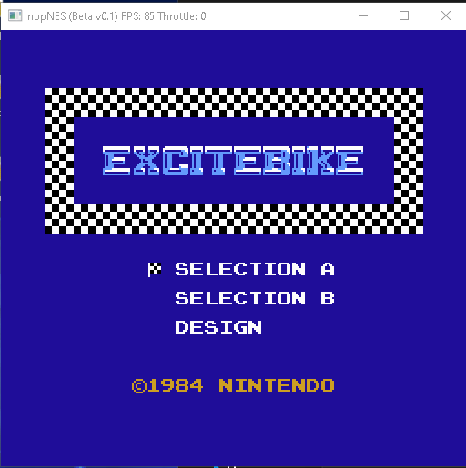
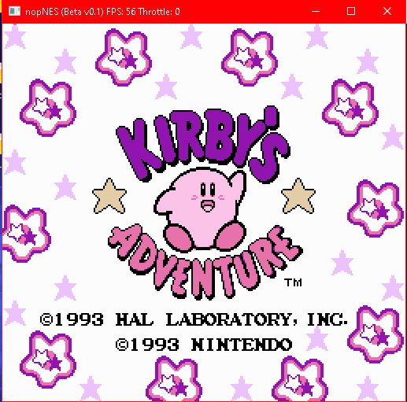
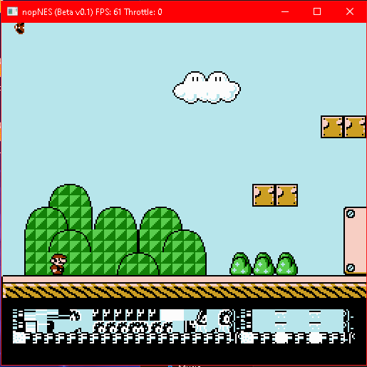
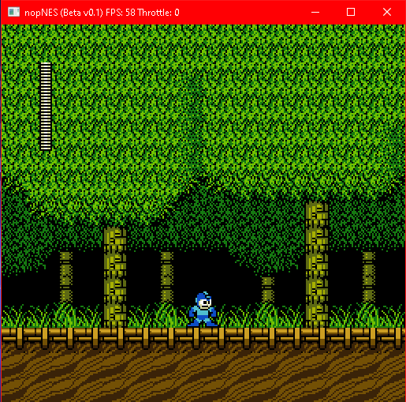
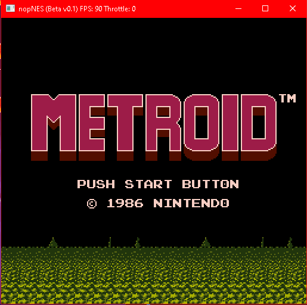
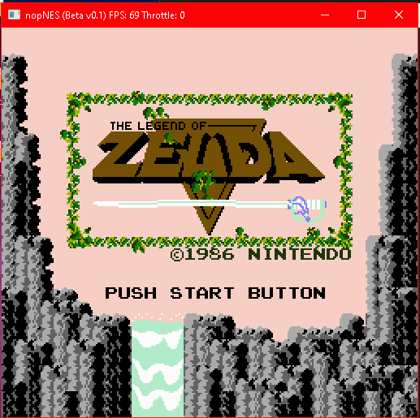

This is a Nintendo Entertainment System Emulator that I am working on. As of now, it has a mostly complete CPU, GPU, and APU. The Emulator currently supports mappers 0,1,2,3,4, and 66. It also has partial support for mappers 9,52,90,209, and 211. Most games will run fine, but SMB3 and Kirby's Adventure still have some problems, as do some other ones.






Github Repos:
Windows / Linux